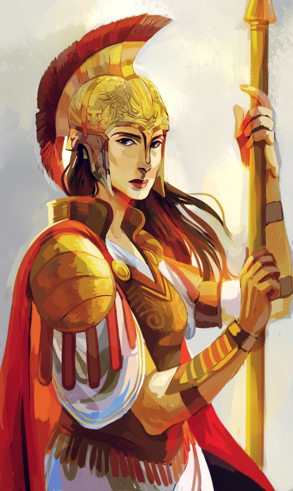

Glória a Atena
Atena é a deusa da sabedoria, da estratégia e das artes manuais. Diferentemente de outros deuses, seus filhos nascem de pensamentos compartilhados com mortais, sendo conhecidos como filhos da mente. Sua influência está presente nas grandes estratégias de guerra, nas construções e nas decisões tomadas com inteligência. Seus descendentes são ensinados a compreender que uma batalha pode ser vencida muito antes do primeiro golpe, desde que exista planejamento.
Os filhos de Atena são reconhecidos pela inteligência, pela curiosidade e pela capacidade de encontrar soluções para problemas complexos. Costumam ser observadores, estratégicos e exigentes consigo mesmos. Valorizam o conhecimento e acreditam que a preparação é tão importante quanto a coragem. Entretanto, precisam aprender que nem tudo pode ser resolvido por meio da razão e que confiar nos outros também é uma forma de sabedoria.